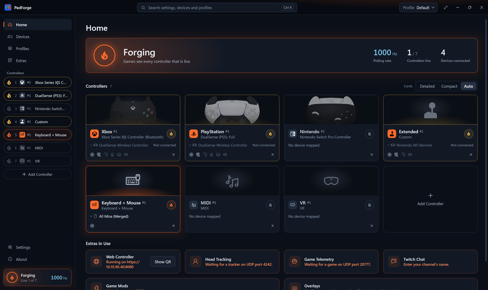
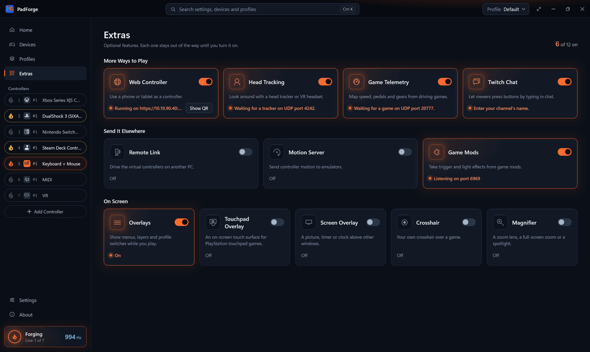

Home¶
PadForge's first page. The engine, a card for each virtual controller, and the extras that are on.
Sections¶
Home is the top entry of the sidebar. Top to bottom it shows:
| Section | What it holds |
|---|---|
| Engine card | The engine's switch and state, and three numbers: the polling rate, the controllers live and the devices connected. |
| Offer | A band for a controller PadForge has just met that no virtual controller uses. Shown only while there is one. |
| Controllers | One card per virtual controller, then the Add Controller tile. |
| Extras in Use | A tile for each extra that is on, or a line that introduces the Extras page while none is. |
While no virtual controller exists, Home shows its first page in place of all four.
The on/off switches of the extras ride the active profile, in two shapes. The Motion Server, Game Mods, Game Telemetry, Web Controller, Touchpad Overlay, Screen Overlay, Crosshair and Magnifier settings, the DSX.exe stand-in switch, the three Overlays switches, the Motion Server, Game Mods, Game Telemetry and Web Controller ports, the touchpad overlay's opacity and place, and Game Telemetry's game, forward port and Full Speed are stored in every profile and follow it on each switch. The custom telemetry formats are one list for every profile. The head-tracking UDP and FreeTrack switches are stored as opinions: a profile records one only when you change the switch while that profile is active, a profile with no opinion leaves the switch alone on a profile switch, and the global setting stands until some profile has one. Remote Link and Auto-Reconnect stay global, since a link between two PCs is not a per-game setting. Enable OpenXR Headset Input stays global too, and so do the Web Controller's plain HTTP settings and access code. The Twitch Chat switch, channel and Who Approves !claim are global as well, so a profile switch never opens or closes the chat connection. The plain address runs only while the Web Controller runs, so a profile that turns the Web Controller off closes both of its ports.
Driver install status is on the driver cards of the Settings page. See Driver Management.
Engine card¶
| Part | Description |
|---|---|
| Flame | Starts and stops the engine. Its tooltip reads "Engine running. Click to stop.", "Engine idle. Click to stop.", "Engine stopped. Click to start." or "Stopping…". |
| State | One word in large type: "Forging", "Idle", "Stopping…" or "Stopped". |
| Line under the state | "Games see every controller that is live." while forging, "The engine is on and no controller is live." while idle, and "Start the engine to bring your controllers back." while stopped. |
| Polling rate | The measured rate, for example 998 Hz, in whole hertz. A dash while the engine is stopped. |
| Controllers live | How many controllers are forging, over how many there are, for example 2 / 3. |
| Devices connected | How many devices are connected now, the number the Devices page gives under its title. A merged row, a keyboard's media keys and the rows PadForge and the extras feed are not counted. |
Flame states¶
| State | Look |
|---|---|
| Forging | Ember flame in a ring that glows and breathes. The card's edge turns ember and a warm wash comes in from the flame's side. |
| Idle | Gold flame. The engine started, but no enabled controller has a connected device (a mapped device that is offline does not count once its grace period ends) and no paired PC is connected over Remote Link, so there is nothing to process. |
| Stopping | Gold flame, flashing while it winds down. |
| Stopped | Hollow flame outline in steel. |
Tip: Auto-Start Engine on Launch in Settings, on by default, starts the engine when PadForge opens.
The offer¶
When PadForge meets a game controller for the first time and no virtual controller uses it, Home shows a gold band: "Name is connected and not in use." Two buttons follow.
- Use It opens Add a Controller for that device. The controller you pick takes it. Close the dialog without picking and the band stays.
- Not Now ends the offer for that device for good.
The band names one device at a time and only while it is connected. It goes as soon as the device lands on any virtual controller. Only game controllers are offered: joysticks, gamepads, wheels, flight controls and the other game types a device reports. A microphone, a head tracker or a keyboard's screen is never offered. A device PadForge knew before version 6 is never offered either. The prompt has its own switch under Assignment Prompts in Settings, and turning it off takes the band down at once.
Controllers¶
The heading Controllers carries the number of controllers. At its right, Cards picks the card size: Detailed, Compact or Auto. Auto, the default, shows detailed cards while they fit the window and compact ones once they would run past it. The choice is kept with PadForge's settings.
Detailed card¶

| Part | Location | Description |
|---|---|---|
| Type tile | Top-left | The type's symbol on a square: Xbox, PlayStation, Nintendo, Extended, Keyboard + Mouse, MIDI or VR. Click it to open the type bar under the card, the same bar the sidebar's type chip opens. See Changing a controller's type. |
| Name and number | After the tile | The type's name and the controller's number within its type, for example Xbox #2. |
| Preset | Under the name | What the controller presents itself as. A long name trims at rest and scrolls while the pointer is on the card. |
| State pill | Top-right | The controller's flame and its state in a word (see below). Click it to turn the controller on or off. Tooltip: "Turn this controller on or off". |
| Delete (X) | After the pill | Removes the controller with one click. Tooltip: "Delete virtual controller". |
| Picture | Body, left | The controller as its page shows it, in the finish chosen there. In color and lit from below while it forges, gray while it does not. A type with no picture shows its symbol. |
| Driven by | Body, right | One row per mapped device: a light that turns ember while the device is sending input ("Sending input now"), its name, a Bluetooth icon on a Bluetooth link, and a battery meter and percentage when the device reports one. A device that is not connected is dimmed and reads "Not connected". With nothing mapped the card reads "No device mapped" and offers Add Device, which opens the Devices page. |
| Waiting line | Under Driven by | Shown while the controller waits: "It starts when the engine starts.", "It starts when this device connects." or "It starts when one of these devices connects." |
| Stage icons | Foot, left | One icon per configuration stage the controller's devices have: sticks, triggers, gyro, lighting, touchpad and audio. An icon turns ember when that stage carries a setup other than the default. Hover one for what each device has set there. |
| Counts | Foot, right | 2 mapped, 1 connected. |
Compact card¶
A compact card is a strip: the picture, then the type tile, name and number, the state pill, and one device. It names the first connected device, or the first mapped one when none is connected, followed by "Not connected" or the number of other devices. The stage icons and Delete sit at its foot.
Controller state¶
The pill's word follows this order: the first that applies is shown.
| Word | Flame | Meaning |
|---|---|---|
| Disabled | Steel outline | Turned off with the pill. |
| Initializing | Flashing ember | The virtual controller is coming up. |
| Virtual controller failed | Gold | The latest attempt to create the virtual controller failed. PadForge retries after you toggle the controller, switch its type or profile, or its devices drop offline and return. A MIDI controller also retries after the Windows MIDI service restarts, after the runtime is installed or uninstalled, when you pick another Output Port, and when its Output Port comes back. |
| Cold | Steel outline | Enabled with no device mapped. |
| Engine stopped | Gold | Enabled and mapped, and the engine is stopped. |
| Awaiting devices | Gold | Enabled and mapped, and the virtual controller is down because nothing is connected. |
| Forging | Ember | The virtual controller is live. Through the HIDMaestro inactivity grace period (60 s by default) a controller whose devices dropped offline still reads Forging until it is taken down. |
Opening and reordering¶
Click anywhere on a card except the type tile, the pill and Delete to open the controller's page, with its Mappings, Sticks & Triggers, Rumble & Haptics, Motion & Touch, Lights & Sound and Macros & Menus sections. A Keyboard + Mouse controller's first section is Keys & Mouse, a MIDI controller's is Notes & Controls, and a VR controller's is Hands.
Drag a card by its body to reorder controllers of the same type. Xbox, PlayStation, Nintendo, Extended, Keyboard + Mouse, MIDI and VR each reorder on their own, and a drop onto another type's card is ignored. Drop on a card's left or right edge to insert beside it, or on its middle to swap. The number within the type updates as soon as you drop. Same-preset reorders are a pointer swap with no kernel rebuild and no game disconnection. Reorders across presets rebuild only the positions whose preset changed. See Controller Slots.
Add Controller¶
The Add Controller tile follows the last card while at least one type has room. Click it to open Add a Controller. The tile goes when every type is at capacity. See Controller Slots.
Before the first controller¶
While no virtual controller exists, Home shows one page in place of everything above.
- A card at the top names the controller PadForge sees, with its link and battery ("Bluetooth, battery 80%") and "Connected". With none connected it reads "No controller connected" and "Connect one with a cable or over Bluetooth." While the engine is stopped it reads "Engine stopped" and offers Start.
- The heading "What should games see?" and a line under it.
- Three tiles: Xbox, PlayStation and Keyboard + Mouse. Click one to make that controller from the device the card names.
- "More types: Nintendo, Extended, MIDI and VR", a link that opens Add a Controller with all seven types.
- At the foot: "Buttons, sticks and triggers are mapped 1:1 as the controller is made.", Pair a Bluetooth controller (opens the Devices page) and Start from a ready-made profile (opens Get Profiles on its starters).
Home goes back to this page when the last controller is deleted.
Extras in Use¶
Under the cards, Extras in Use lists each extra that is on as a tile: its symbol, its name, "On." with its live status, and a button that opens the extra's page. The Web Controller's tile adds Show QR, which opens its page too. A line under the tiles says how many more extras there are, for example "9 more in Extras. An extra is off until you turn it on.", with Extras as a link.
While no extra is on, the heading reads Extras and the section holds one line, "Optional features. Each one stays out of the way until you turn it on.", and an Open Extras button.
Extras¶

Extras is its own sidebar entry, after Profiles. Its catalog holds twelve tiles in three groups, with a count such as "3 of 12 on" in its head. Each tile has a switch at its corner that turns the extra on or off without leaving the catalog. A click anywhere else on the tile opens the extra's page.
| Group | Extra | Tile line | Full page |
|---|---|---|---|
| More Ways to Play | Web Controller | Use a phone or tablet as a controller. | Web Controller |
| More Ways to Play | Head Tracking | Look around with a head tracker or VR headset. | Head Tracking |
| More Ways to Play | Game Telemetry | Map speed, pedals and gears from driving games. | Game Telemetry |
| More Ways to Play | Twitch Chat | Let viewers press buttons by typing in chat. | Twitch Chat |
| Send It Elsewhere | Remote Link | Drive the virtual controllers on another PC. | Remote Link |
| Send It Elsewhere | Motion Server | Send controller motion to emulators. | DSU Motion Server |
| Send It Elsewhere | Game Mods | Take trigger and light effects from game mods. | Game Mods |
| On Screen | Overlays | Show menus, layers and profile switches while you play. | Overlays |
| On Screen | Touchpad Overlay | An on-screen touch surface for PlayStation touchpad games. | Touchpad Overlay |
| On Screen | Screen Overlay | A picture, timer or clock above other windows. | Screen Overlay |
| On Screen | Crosshair | Your own crosshair over a game. | Crosshair |
| On Screen | Magnifier | A zoom lens, a full-screen zoom or a spotlight. | Magnifier |
Every extra's page has the same frame: Extras / name to go back (Alt+Left, the keyboard's Back key and the mouse's Back button do the same), a head with the extra's name, one line, its switch and its reset, a status card, cards of settings with a Reset All each, a More card that opens the rest in place, and a note whose bracketed words link to the Devices page or to a controller's Macros & Menus section.
Web Controller¶
The page's switch is Enable Web Controller Server. Connect a Phone shows the QR code and the address with Copy Address, and Phones lists the phones connected ("No phones connected." while none is). More holds Web Controller Port (default 8080), Also Serve Plain HTTP, Plain HTTP Port (default 8081), This PC Only, Access Code with New Code, and the Plain HTTP Address with its own Copy Address. See Web Controller.
Head Tracking¶
The page's switch turns head tracking on. Set Neutral makes your current position the neutral for the OpenXR headset input. Sources holds Enable UDP Tracking Input, Enable FreeTrack 2.0 Shared Memory Input and Enable OpenXR Headset Input, which can run together. Range holds Rotation Range (degrees) and Translation Range (cm). More holds UDP Port, OpenXR Runtime and the Per-Axis Range boxes: Yaw, Pitch, Roll, Lean Left and Right, Rise and Crouch, and Lean Forward and Back, where zero follows the range above. The pose is the Head Tracker row on the Devices page. See Head Tracking and VR Controller Input.
Game Telemetry¶
The page's switch is Listen for Game Telemetry. It listens only while the engine runs. Game picks Auto-Detect, a game family or a custom format. More holds Game Telemetry Port (default 20777), Forward to Port (0 forwards nothing), Full Speed (km/h) (default 300) and, under Games PadForge Does Not Know, Custom Formats…. The values are the Game Telemetry row on the Devices page. See Game Telemetry.
Twitch Chat¶
The page's switch is Read Twitch Chat. It reads only while the engine runs. The settings are Channel, Who Approves !claim (Only you, You and your moderators, or You, your moderators or two other viewers) and Words Viewers Can Type with Manage Chat Commands. While You Are Live holds Pause / Resume, Skip, Clear Line and End Claim, with the line "Viewers take turns with !claim and skip a command with !skip. The newest 20 commands wait in line, and a command plays for at most 10 seconds." Picture for Your Broadcast gives the address to add to OBS while the Web Controller's plain HTTP address runs. See Twitch Chat.
Remote Link¶
The page's switch is Enable Remote Link Server. Paired PCs lists your pairings, each with Pair / Connect, Assign Shared Devices, Rename, Revoke and Allow Remote Assignment Changes, plus Revoke All. Pair Another PC lists unpaired PCs nearby and shows This PC’s Code with Copy. More holds Auto-Reconnect, Remote Link Port (default 27500), Pairing Identity (Secure: This PC Only, Portable: Password Protected, Portable: No Password) and Connect by Address. See Remote Link.
Motion Server¶
The page's switch is Enable DSU Motion Server (CemuHook Motion Provider Protocol). More holds Motion Server Port, default 26760. The DSU protocol has 4 slots, so only the first 4 virtual controllers send motion. See DSU Motion Server.
Game Mods¶
The page's switch is Accept DSX Game Mods. It listens only while the engine runs. More holds Game Mod Port (default 6969, the port DSX and the mods use) and Run a DSX.exe Stand-In, for mods that stay silent unless a program named DSX is running. While the server listens, PadForge writes its port where the mods look for it. See Game Mods.
Overlays¶
The on-screen indicators PadForge shows while you play. Turning one off never changes what the input does, only whether it is shown. Under What Shows are three switches, all on by default:
| Switch | What it shows |
|---|---|
| Menu Overlay | The ring, grid or bar of a menu while it is open. Menus still fire with the overlay off. A menu's own place, size and opacity are set on the menu, in a controller's Macros & Menus section. |
| Shift Layer Flyout | The layer's name when a shift layer turns on, for the time that layer sets. |
| Profile Switch Overlay | The profile’s name when the profile changes. |
The page's own switch, Overlays, is on while any of the three is on. Turned off, it remembers which were on, and turned on again it brings those back. Its reset puts all three back on.
Touchpad Overlay¶
An on-screen, transparent touch surface you can place on any monitor. It drives the touchpad of the DualShock 4 or DualSense controllers its device is assigned to.
| Control | Description |
|---|---|
| Enable Touchpad Overlay | Shows the overlay window. |
| Opacity | Slider plus a percentage box, 0 to 100%, default 25%, with a reset button. Under Look and Place. |
| Reset Position | Recenters the overlay on its monitor. Under Place on Screen. |
| Status | A line that says whether the overlay is showing. |
The overlay tracks finger contacts and feeds them to every controller its Touchpad Overlay device is assigned to on the Devices page. It needs the OS to report touch: a mouse does not draw a finger on it. Three or more fingers on the overlay drag the window to a new spot, and so does a right-button mouse drag. A double tap with one finger, or a press on the bar along the bottom edge, clicks the touchpad. The bar takes a mouse click as well.
Screen Overlay¶
A transparent window above other programs that shows a picture, a timer, the time or a lightbar's color, with no keyboard screen needed. Each overlay has Enable Screen Overlay, Choose What It Shows…, Opacity and Reset Position, and Remove while several exist. Add Overlay adds another, up to 8. While another program is in front, clicks pass through an overlay. While PadForge is in front, drag it with the right mouse button and size it from its corner. See Screen Overlay.
Crosshair and Magnifier¶
Crosshair draws your own crosshair over a game. Magnifier shows a zoom lens, a full-screen zoom or a spotlight. See Crosshair and Magnifier.
Related pages¶
- Installation: first-time setup.
- Controller Slots: add and manage virtual controllers.
- Devices: view physical controllers and assign them to controllers.
- Settings: engine options, appearance, drivers.
- Profiles: per-app profile switching.
- Web Controller, Remote Link, Head Tracking, Game Telemetry, Twitch Chat, Game Mods, DSU Motion Server, Screen Overlay, Crosshair, Magnifier: the extras.
- Menus: the radial and touch menus the Menu Overlay draws.
Last updated for PadForge 6.0.0.